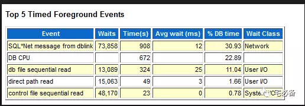
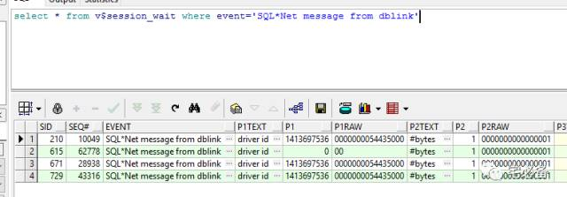
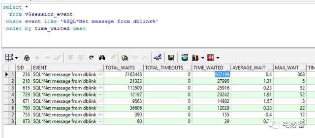
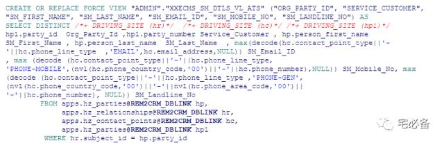

SQL*Net message from dblink
原创 2017-08-07 Oracle 宅必备
从今天开始讲解awr报告Top 5 Timed Events部分
今天讲SQL*Net message from dblink 等待事件
SQL*Net message from dblink

这个等待事件发生在会话在等待从远程数据库获取信息，该信息是通过dblink进行传输的，oracle把该等待事件归类于network类
查询实时的等待
通过如下语句查询实时的等待事件
select * from v$session_wait where event=’SQL*Net message from dblink’

P1代表driver id
P2代表通过dblink传输的字节数
查询非实时的等待
select *
from v$session_event
where event like '%SQL*Net message from dblink%'
order by time_waited desc

注意这里的信息是从实例起来的汇总，同时由于SID是可以复用的，所以查看出来的SID并不代表上次的语句是这个等待
如何发生的
当我们的SQL语句通过dblink访问远程数据库时，需要先将远程数据传输到本地再进行处理，在完成这个动作之前该会话处于SQL*Net message from dblink等待
该等待主要发生在如下几种情形
- 数据库中有大量的物化视图需要定时同步远程数据库至本地
- 数据库中有大量SQL语句需要通过dblink从远程获取数据
如何调优
- 针对物化视图我们首先需要减少不必要的物化视图数量，同时采用增量更新的方式，对于DML操作频繁的主表我们需要提高刷新频率
- 针对SQL语句中有大量dblink的语句我们需要尽量减少dblink的访问
- 如果不能减少可以通过在源库建立view的方式使其在源库执行
- 也可以使用DRIVING_SITE hint的方式，手动指定oracle让其在源库执行。
